邦訳カノン作品一覧
| -32BBY | 32BBY-22BBY | 22BBY-19BBY | 19BBY-13BBY | 13BBY-0BBY | 0ABY-3ABY | 3ABY-4ABY | 4ABY-5ABY | 5ABY-34ABY | 34ABY- | |
|---|---|---|---|---|---|---|---|---|---|---|
| 1977 | 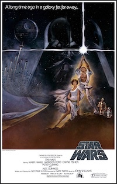 エピソード4/新たなる希望 | |||||||||
| 1980 | 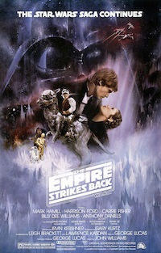 エピソード5/帝国の逆襲 | |||||||||
| 1983 | 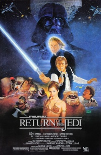 エピドード6/ジェダイの帰還 | |||||||||
| 1999 | 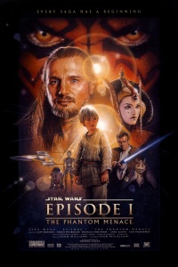 エピドード1/ファントム・メナス | |||||||||
| 2002 | 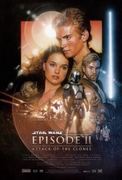 エピソード2/クローンの攻撃 | |||||||||
| 2005 | 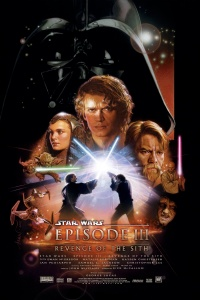 エピソード3/シスの復讐 | |||||||||
| 2008 | 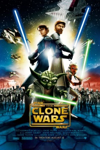 クローン・ウォーズエピソード2と3の間を描くアニメシリーズ | |||||||||
| 2014 | 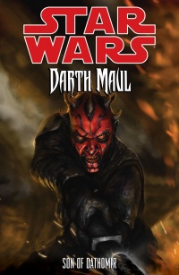 ダソミアの継承者クローン・ウォーズが一時期キャンセルされた際の未完エピソードがもとのコミック | 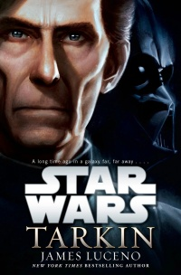 ターキンターキンのルーツを描く小説 | 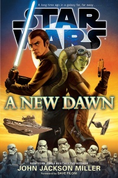
新たなる夜明けケイナンとヘラの出会いを描く小説 反乱者たち帝国期の銀河を舞台にしたアニメシリーズ | |||||||
| 2015 | 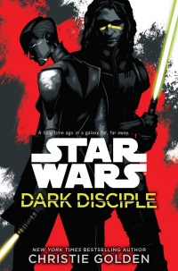 Dark Discipleクローン・ウォーズの未完エピソードをもとにした未邦訳小説。アサージ・ヴェントレスとクインラン・ヴォスが主人公 | 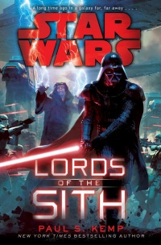 ロード・オブ・シスライロスの反乱にヴェイダーと皇帝が対処する | 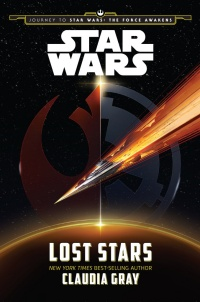 ロスト・スターズ反乱軍と帝国に別れた男女を主人公に移りゆく銀河を描く。LINEコミックで漫画化された | 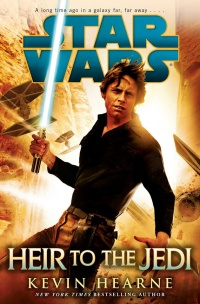
ジェダイの継承者まあまあ面白い 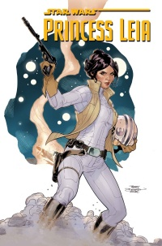
プリンセス・レイアエピソード4直後を舞台にレイアを描くコミック。一冊完結 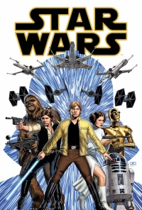
スター・ウォーズエピソード4と5の間のルーク、レイア、ハンなどを描くコミックシリーズ。『スカイウォーカーの衝撃』、『ナー・シャッダの決斗』、『ベイダー・ダウン』(ダース・ヴェイダー・シリーズとのクロスオーバー)、『サンスポットの騒乱』が邦訳されている 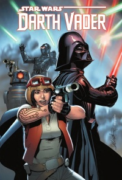
ダース・ベイダーエピソード4直後のヴェイダーを描く。『ダース・ベイダー』、『偽りの忠誠』、『ベイダー・ダウン』(スター・ウォーズ・シリーズとのクロスオーバー)、『シュー＝トラン戦役』、『絶たれた絆』として全巻邦訳されている | 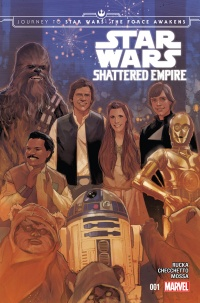 砕かれた帝国エピソード6直後の銀河を描くコミック。皇帝の遺志であるシンダー作戦が描かれる。一冊完結 | 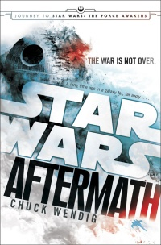 アフターマスエピソード6後に立て直しを図る帝国が描かれる小説。続刊『Aftermath: Life Debt』、『Aftermath: Empire's End』は未邦訳 | 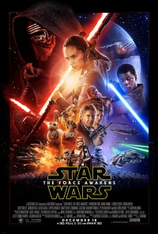 エピソード7/フォースの覚醒 | |||
| 2016 | 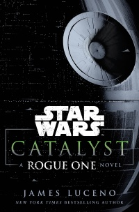 カタリストローグ・ワンに至るクレニックの野望が描かれた小説 | ローグ・ワン | 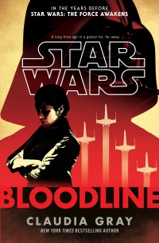 ブラッドラインエピソード7の少し前を舞台にファースト・オーダの暗躍とレジスタンスの誕生を描く小説 | 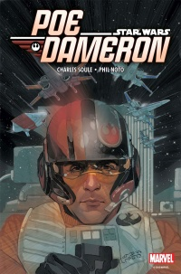 ポー・ダメロンエピソード7前を舞台にポー・ダメロンの活躍を描くコミックシリーズ。１巻のみ邦訳 | ||||||
| 2017 | 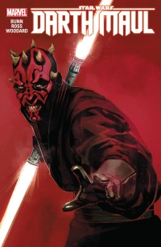 ダース・モールエピソード1前のダース・モールを描くコミック | 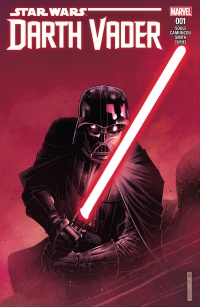 シスの暗黒卿エピソード３直後のヴェイダーを描くコミックシリーズ。『帝国の爪牙』、２巻（『潰えた遺産』『燃える海原』）、3巻（『燃える海原』『ベイダーの城』）として全巻邦訳されている | 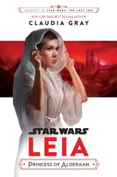 レイア・オーガナ オルデラーンの王女エピソード4前のレイアを描く小説。『レイア -王女の試練-』としてLINEコミックで漫画化もされている | 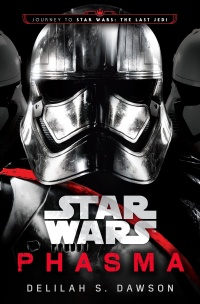
ファズマファズマのルーツを描く小説 | 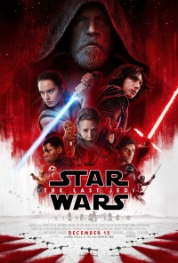 エピソード8/最後のジェダイ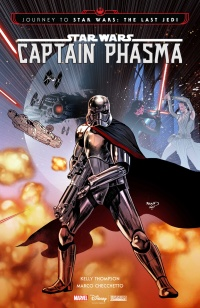 ファズマエピソード7直後のファズマを描いたコミック | |||||
| 2018 | 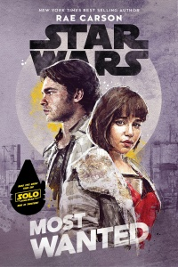 最重要手配映画ハン・ソロ前のハンとキーラを描く小説 | ハン・ソロ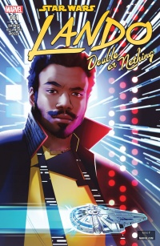 ランド映画ハン・ソロ直前のランドの活躍を描くコミック | 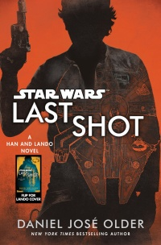 ラスト・ショットエピソード6後のハンとランドを描く小説。過去の事件が発端になっており回想パートではL3-37も登場する | レジスタンスエピソード7の前から8にかけての時期のアニメシリーズ | ||||||
| 2019 | 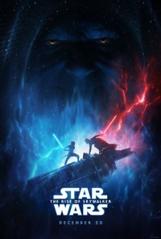 エピソード9/スカイウォーカーの夜明け |